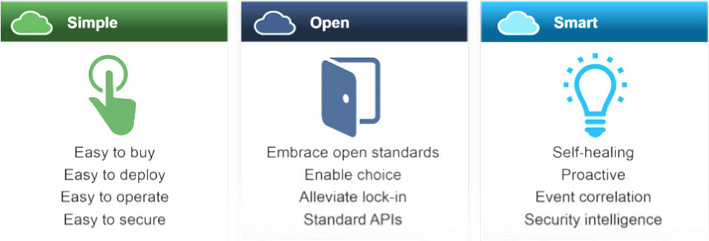
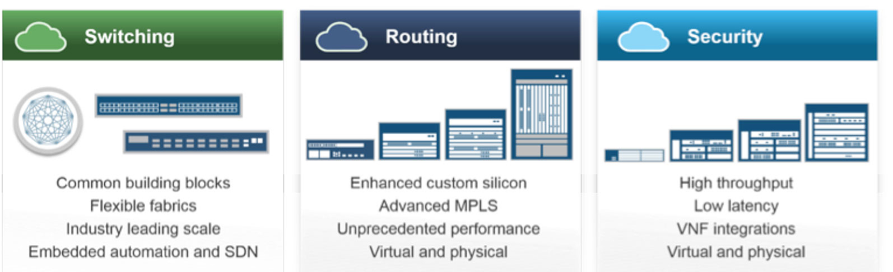

What's the role of Juniper?
Many data centers are built on outmoded technology foundations. Proprietary or obsolete hardware and software can limit the speed at which your data center can adapt. Closed, poorly integrated and inflexible underpinnings don't just slow down customers' IT staff, they slow down their entire business.
Juniper is here to help customers move from a traditional 3 tier architecture (Core/Distribution/Access) IT Data Center to a high performing data center based on a one/two tier network (spine & leaf) that is agile, responsive and intelligent.; a modern network that is capable of delivering Instant Evolution of business processes, products and services.
How Juniper helps build Networks that know Simplicity?
The data center needs to have a secure, agile and efficient network foundation. This is best delivered via a simple, open and smart network which will help organizations instantly evolve without disruption.
Legacy infrastructure can hold an enterprise back. An open network, built on industry standards and designed to prevent vendor lock-in, on the other hand, protects an organization's initial investment by avoiding rip and replace further down the line. Additionally, it provides the flexibility for newer applications to be added live to the network with speed and ease as they are developed over time.
.jpg)